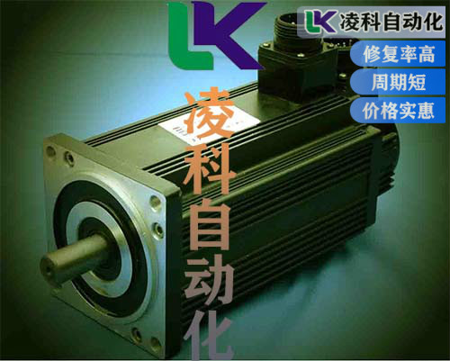
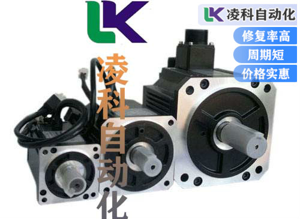
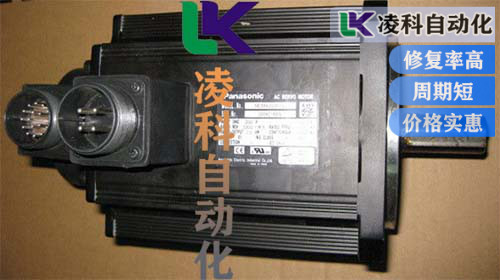

伦茨伺服电机电阻器配件的损坏罕见故障：电动机电阻器**常见的症状是加热器风扇仅在**速度设置下运行而在低速下不工作。在一些汽车，一个失败的 电机电阻会导致加热器风扇完全停止工作。在大多数情况下， 电机电阻由于腐蚀或过热而失效。有时，对电机旋转的机械阻力会导致过大的电流，该电流会过热并过早损坏电机电阻器。例如，当风扇叶片被异物卡住或电动机轴承磨损并且无法自由旋转时，就会发生这种情况。电机控制模块出现问题的频率较低，但由于相同的原因而失败：由于电机卡塞或短路时的腐蚀或过热而导致的故障。在大多数情况下，当伦茨伺服电机控制模块发生故障时，电机根本不工作，发生故障的送风机控制模块或处理器可引起马达继续即使点火开关运行。

伦茨伺服电机电阻器如何诊断？如果电阻没有视觉损伤，则**检查端子之间的电阻并将其与规格进行比较。如果电阻超出规格，则**更换电阻。风机电机本身的问题而发生故障。这意味着在更换 电机电阻后，检查 电机是否自由运行并且没有产生任何噪音。我们已经看到了磨损的情况导致**近更换的电阻器再次发生故障的情况。例如，这个问题在较老的克莱斯勒和道奇小型货车中很常见。在这种情况下，还**更换电机，电动机磨损的症状之一是，它在运行时会间歇性地发出刺耳的刺耳噪音。
伦茨伺服电机电压故障的检测：如果电动机上没有电压，则**从保险丝开始对整个 电动机电路进行测试。如果电机损坏，则需要更换。在其他情况下，它可能位于仪表板内，这使得更换困难。电机控制模块如何测试？经销商的机械师可以使用扫描工具诊断HVAC系统。如果没有可用的扫描工具，则在许多具有自动气候控电机控制模块和电路其他部分的电压。 电机控制模块（本田称其为功率晶体管）为地面功率晶体管有4根线：两根来自气候控制系统控制单元，一根是接地线，一根是连接到 电机的负极。电机上的电压，如果不正常，则测量功率晶体管上的电压，如功率电压不平稳有情况下可以调整电压来调整。

伦茨伺服电机频繁启动和停止故障维修：根据其额定值和速度显示行式电动机的**启动和停止次数。限制启动频率是电机运行中压力**的部分，这一点非常重要。通过提高电动机的额定功率（这可以缩短发生故障的时间），伦茨伺服电机解决了许多有据可查的电动机反复发生的情况。但是，失败的根本原因实际上是启动和停止的频率。关键是要密切监视启动次数-小型或中型电动机每小时一次，大型电动机每天一次。在线测试可以确保完全符合专业标准。通过将这些标准包含在长期无监督的监视操作中，可以将其用于识别不符合标准的操作失败的原因。
伦茨伺服电机的外部环境因素：伦茨伺服电机热成像技术通常用于确定使用电动机的条件。环境温度高，伦茨伺服电机管道堵塞等导致的冷却不良是电机和绝缘系统上非电感应温度应力的典型示例。空气，湿运行和高海拔运行中的化学研磨物质是一些常见的环境压力。

伦茨伺服电机的轴承与绕组故障的原因：伦茨伺服电机轴承和绕组故障是**常见的电动机故障。根本原因通常是过热。预防性维护实践经常将在线电气测量限制为解释电流水平。尽管很重要，但该方法在确定由绕组过热引起的故障方面并没有决定性的意义。确保成功进行预防性维护和监视的**方法是根据NEMA和其他专业标准进行测试。